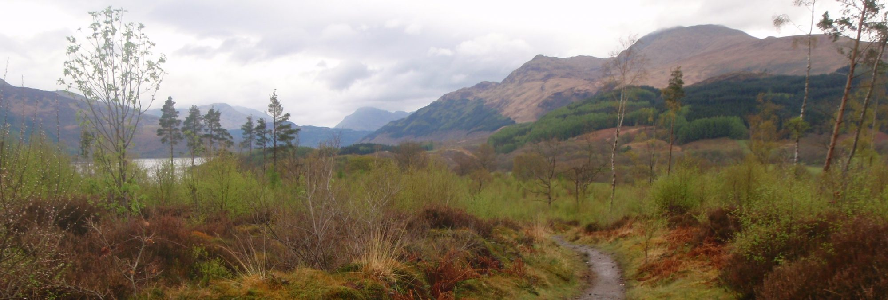

Rachel S. Gross is an environmental and cultural historian of the modern U.S. and an Assistant Professor of History at the University of Colorado Denver . In 2019 she was a Carson Fellow at the Rachel Carson Center in Munich and a Postdoctoral Teaching, Research, and Mentoring Fellow at the Davidson Honors College of the University of Montana .
She was awarded the 2018 Herman E. Krooss Prize for Best Dissertation in Business History from the Business History Conference for her writing on the history of outdoor clothing and gear in the U.S. from the Civil War to the present.
Partnerships and Outreach
Dr. Gross works with university and community partners to bring history into the public realm. In 2019, she curated an exhibit at the Historical Museum at Fort Missoula on “Outdoor Gear Stories From the Treasure State.” From January – July 2017 she served as the managing editor of Wisconsin 101 , a collaborative history project that uses material culture to tell stories about Wisconsin’s past. Read a recent post she edited. In 2016-2017, Dr. Gross also served on the editorial board of Edge Effects , the digital magazine of environmental humanities of the Center for Culture, History, and Environment in the Nelson Institute for Environmental Studies .
While you’re here, you can take a look at her writing , explore courses she’s taught , or review her CV . You can also follow her on Twitter .
